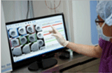
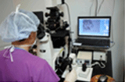
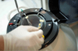

Specialized Clinics
Infertility Clinic
Overview
Women-Pediatric Center proudly presents experience of 55 years in obstetrics and gynecology.
-
Under newly renovated environment and the latest medical equipment facilities, we are able to provide safe and prompt care for women and children including high-risk mothers.
Infertility clinic
-
so called "I Baram Clinic" - brought in primo vision system (made by VitroLife) in order to monitor all embryos without disturbing them. This system records the progress inside the incubator, increasing the chance to assess embryo development precisely, and transfer the one with best quality for implantation.
Procedure
IVF (In Vitro Fertilization)
-
1. Period of stay : 28 days or more
2. Expected cost : 6,000 - 6,300$
3. Procedure includes consultation, ultrasonography, laboratory blood test, induction of ovulation, ovum gathering, primo vision, and embryo-freezing
-

PRIMO Vision Full System
-
1st in the nation, increasing the chance to choose the best quality embryo with 24-hour embryo monitoring, incubator with 5% oxygen, providing the ultimate culture condition
-

Most stabilized laser incubator
-
higher pregnancy rate, higher implantation rate, preimplantation genetic diagnosis and screening (PGD, PGS)
-

Embryo-freezing facility